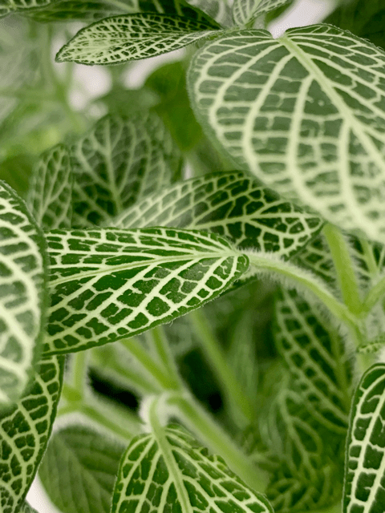

Nerve Plant | My Drama Queen | Care Difficulty – Moderate
If you are seeking a plant that encourages conversation, this is an excellent choice for your home. They come in two main varieties: F. argyroneura with silver-white veins, or F. pearcei, the carmine pink-veined beauty. I own four of the silver-veined types. The foliage is low-growing and trailing with oval-shaped leaves. It’s truly a gorgeous plant to stage on your coffee table or dining room table. A person is naturally drawn to the delicate designs that each leaf presents.

As beautiful as it is, these nerve plants are somewhat temperamental and tricky to grow as houseplants. The nerve plant requires very high, constant humidity; it is sensitive to strong, direct sunlight and will quickly suffer from leaf burn. Frankly, I refer to my nerve plants as drama queens. If you miss one watering, it will surely let you know! Take a peek at the photos below. Even though the plant will revive and look beautiful, going through this form of “abuse” too often will take a toll on the plant.
I caught my little drama queen acting out in the photos above. One day she looked lovely and the next day she flopped over in her typical dramatic form. I gave her a drink of water which restored her energy and brought her back to the living.
Light Requirements
- The nerve plant will do well in indirect, filtered, or dappled sunlight from a window, such as that offered by north-facing windows. It will also thrive under fluorescent lights.
Water Requirements
- Nerve plants like well-drained moist soil, but not too wet.
- Use room temperature water on the plant to avoid shock.
- It is prone to collapse if it’s allowed to dry out. Although it will recover quickly if thoroughly watered, repeated fainting spells will eventually take their toll on the plant.
- Once I’ve watered it, I make sure that I empty the excess water that catches in the cover pot. Standing water can lead to root rot and also attract fungus gnats (read more below on those pesky things).

Temperature Requirements
- The nerve plant does well at room temperature, but it’s a little fussy about low temps.
- Don’t allow the ambient temperature to reach below 60 degrees (F). Keep the plant away from cold winter windows, sudden temperature swings, cold drafts, and heat vents.
Humidity Requirements
- These plants flourish within a high humidity environment (around 60-70% relative humidity).
- Misting may be required to maintain humid-like conditions, or you may need to add a humidifier to the room.
- I have three of them on my living wall (consists of 25 plants on a wall). The nerve plants do well in this environment because I feel that all the plants have created a special eco-system.
Fertilizer/Plant Food
- During the growing months (spring and summer months), the nerve plant will appreciate regular feedings.
- Feed your nerve plant small amounts of a balanced fertilizer every few months. If you use liquid fertilizer, dilute it by half.
Additional Care
-
Remove any dead, discolored, damaged, or diseased leaves and stems as they occur with clean, sharp scissors. I look over my plants every time I water them.
- Repot in spring every couple of years to refresh the soil.
- The nerve plant has shallow roots, so you can keep it in a small pot.
Plant Characteristics to Watch For
Diagnosing what is going wrong with your plant is going to take a little detective work, but more important, patience! First of all, don’t panic and don’t throw a plant out prematurely. Take a few deep breaths and work down the list of possible issues. Below, I am going to share some typical symptoms that can arise. When I start to spot troubling signs on a plant, I take it into a room with good lighting, pull out my magnifiers, and begin with a thorough inspection.
My plant isn’t very bushy.
- Solution: Pinch off stem tips regularly to keep the plant bushy and full. Also, pinch off any small flower spikes that may appear, because they are insignificant and will weaken the show of leaves.
The leaves are yellowing.
- Plants that are either overwatered or allowed to stagnate in water will develop yellowed, limp leaves.
- Solution: It is best to use pots that have drainage holes so any excess water can drain out. Keep a close eye on the watering schedule.
My plant is dropping leaves.
- Leaf drop is usually the result of cold temperatures or drafts.
- Solution: Relocate the plant to spot that is free from cold or hot drafts
My plant had dry, shriveled leaves.
- Dry, shriveled leaves usually indicate that the plants are not receiving enough humidity or are receiving too much direct sun.
- Solution: Use a room humidifier in winter when humidity levels can drop significantly. If your space appears to be humid enough, check out how much sun it is getting. If it’s getting too much direct light and you can’t relocate it, hang a sheer curtain in the window to diffuse the light.
- Insect problems include fungus gnats, mealybugs, or aphids. Infestations should be treated immediately. Keep affected plants isolated to prevent the pests from spreading to other indoor plants.
Common Bugs to Watch For
If you want to have healthy house plants, you MUST inspect them regularly. Every time I water a plant, I give it a quick look-over. Bugs/insects feeding on your plants reduces the plant sap and redirects nutrients from leaves. Some chew on the leaves, leaving holes in the leaves. Also watch for wilting or yellowing, distorted, or speckled leaves. They can quickly get out of hand and spread to your other plants.
IF you see ONE bug, trust me, there are more. So, take action right away. Some are brave enough to show their “faces” by hanging out on stems in plain sight. Others tend to hide out in the darnedest of places, like the crotch of a plant or in a leaf that has yet to unfurl.
-

-
Mealybugs.
-

-
The plant is a pothos, but mealybugs can attack other plants.
- Mealybugs look like small balls of cotton. They can travel slooooooowly, but they have a strong will and determination! Though they are slow-moving, if any plant is touching another, there is a chance the mealybug will hitch a ride on a new leaf and spread. They breed like rabbits of the insect world. Females can deposit around 600 eggs in loose cottony masses, often on the underside of leaves or along stems.
- Aphids are more commonly seen if you place your plants outdoors. Aphids are indeed bugs. They are tiny insects that, along with black, also come in shades of yellow, green, brown, and pink. They are often found on the undersides of leaves.
- Spider mites are more common on houseplants. They are not insects – they are related to spiders. These appear to be tiny black or red moving dots. Spider mites are nearly invisible to the naked eye. You often need a magnifying lens to spot them, or you may just notice a reddish film across the bottom of the leaves, some webbing, or even some leaf damage, which usually results in reddish-brown spots on the leaf.
Toxicity
This plant is 100% pet safe and non-toxic.
© AmieSue.com